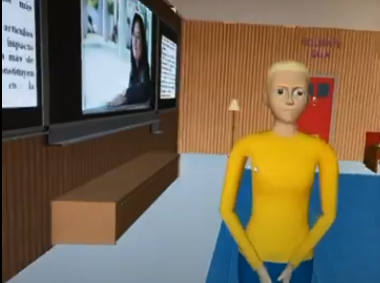

Hemos estado trabajando en la plataforma Cospaces cuya aplicación nos permite crear un escenario 3D en términos muy generales. Ese es el punto fuerte de la página, aunque también odemos crear viajes seminversivos 360º. En nuestro caso, hemos aprovechado para recrear un museo a partir de cero donde iremos observando obras de arte en las que aparecen nuestras científicas y una breve descripción de su vida o carrera.
